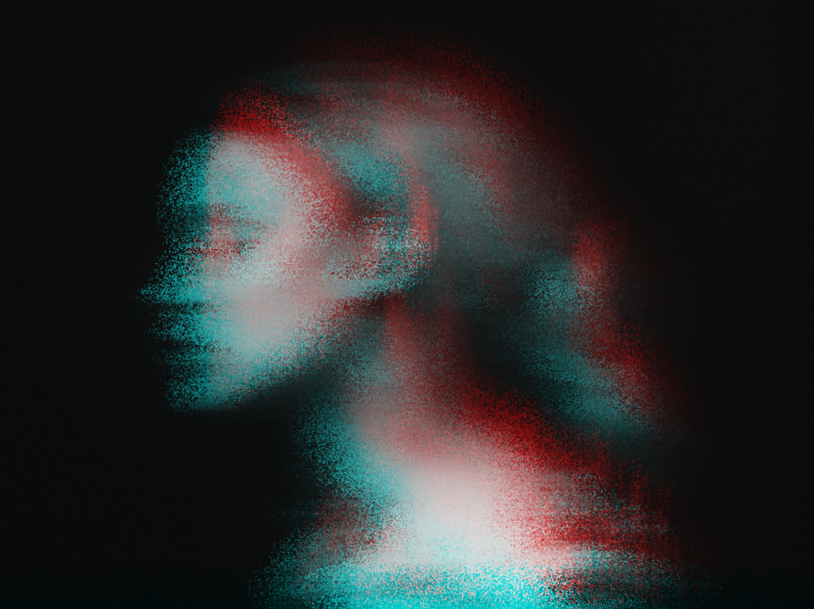
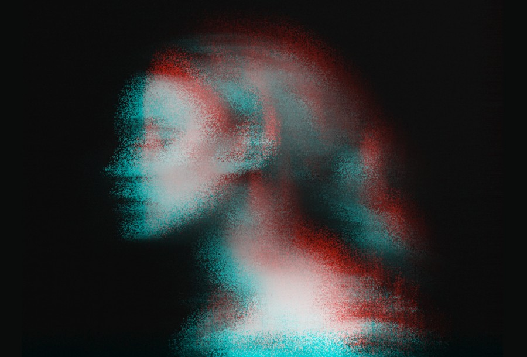
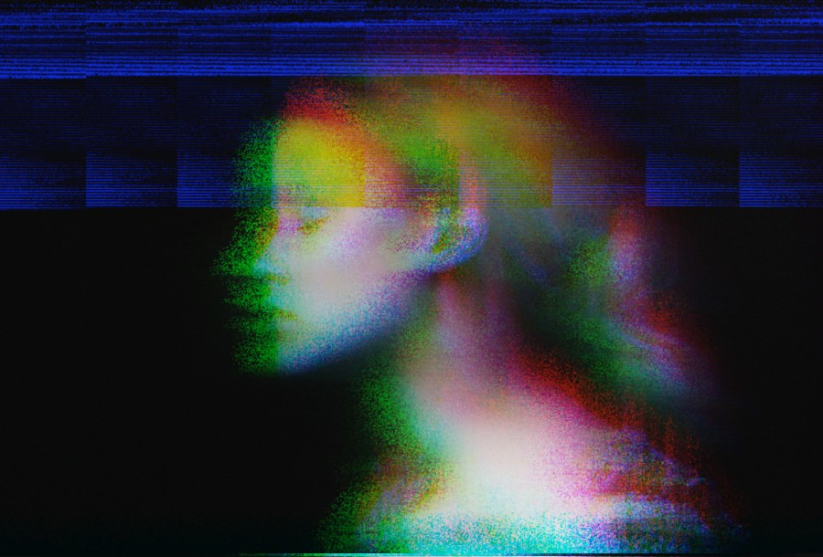

HI, BRINNA

Playing with Pixels
HTML, CSS, JS
Another product of daily 'sketches', I created custom photo filters by using javascript to manipulate image pixels. The original photo is below on the left. Check it out >>
Github

